Los cánceres, uno a uno
Fichas de los cánceres más frecuentes y de los que más preguntas generan: qué son, síntomas, diagnóstico, tratamiento, pronóstico y dónde informarse.
Mama y ginecológicos
 01
01Cáncer de mama
El cáncer más frecuente en las mujeres. Tipos, factores de riesgo, cribado, síntomas, diagnóstico, tratamiento por estadios y pronóstico, con fuentes oficiales.
Leer → 02
02Carcinoma ductal in situ
Una lesión de la mama en la que las células malignas no han salido de los conductos. Se detecta casi siempre en la mamografía y tiene un pronóstico excelente.
Leer → 03
03Cáncer de mama triple negativo
Un subtipo sin receptores hormonales ni HER2, más frecuente en mujeres jóvenes y en portadoras de BRCA1. La quimioterapia y la inmunoterapia han mejorado mucho sus resultados.
Leer →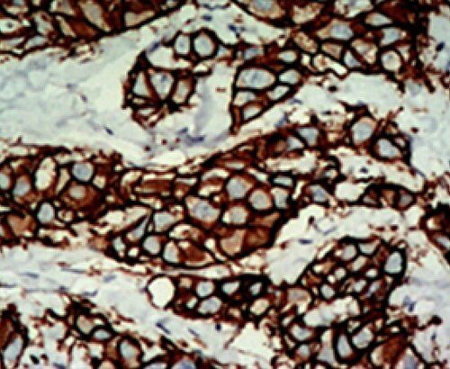
04Cáncer de mama HER2 positivo
Un subtipo con exceso de la proteína HER2 que antes tenía mal pronóstico y que los fármacos anti-HER2 han convertido en uno de los que mejor responden al tratamiento.
Leer →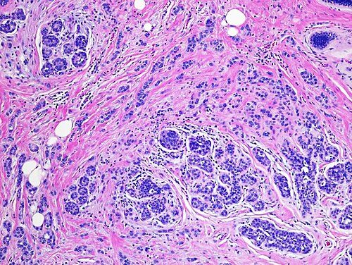
05Carcinoma lobulillar de mama
El segundo tipo más frecuente de cáncer de mama. Crece de forma difusa, es más difícil de ver en la mamografía y tiene un comportamiento propio.
Leer → 06
06Cáncer de mama en el hombre
Alrededor del 1 % de los cánceres de mama se dan en hombres. Suele diagnosticarse tarde por desconocimiento, y a menudo tiene un componente hereditario.
Leer →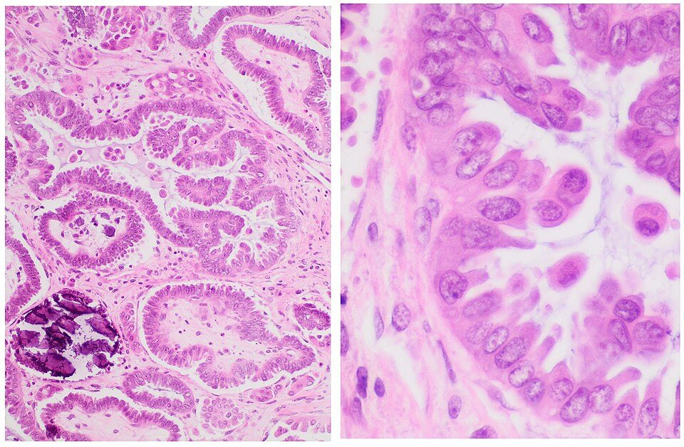
07Cáncer de ovario
El cáncer ginecológico más letal, porque suele detectarse tarde. Tipos, síntomas que hay que conocer, herencia, cirugía, quimioterapia e inhibidores de PARP.
Leer → 08
08Tumores germinales y estromales de ovario
Tumores de ovario poco frecuentes que afectan a menudo a niñas y mujeres jóvenes. Muchos se curan conservando la fertilidad.
Leer → 09
09Cáncer de cuello uterino
Uno de los pocos cánceres que se pueden prevenir casi por completo, con la vacuna del VPH y el cribado. Causas, lesiones previas, síntomas, tratamiento y pronóstico.
Leer → 10
10Cáncer de endometrio
El cáncer ginecológico más frecuente en los países desarrollados. Avisa pronto con un sangrado tras la menopausia y la mayoría se curan con cirugía. Su clasificación molecular ha cambiado el tratamiento.
Leer → 11
11Sarcoma uterino
Tumores malignos poco frecuentes que nacen en el músculo o el tejido de sostén del útero. Se confunden a menudo con miomas.
Leer →12Cáncer de vulva
Cáncer poco frecuente de los genitales externos femeninos. El picor persistente o una lesión que no cura deben revisarse; hay dos vías, una ligada al VPH y otra al liquen escleroso.
Leer →13Cáncer de vagina
Uno de los cánceres ginecológicos más raros. Casi siempre es un carcinoma epidermoide ligado al VPH y se trata sobre todo con radioterapia.
Leer → 14
14Enfermedad trofoblástica gestacional
Tumores que nacen del tejido de la placenta, desde la mola hidatiforme hasta el coriocarcinoma. Son de los cánceres más curables, incluso con metástasis.
Leer →Pulmón y tórax
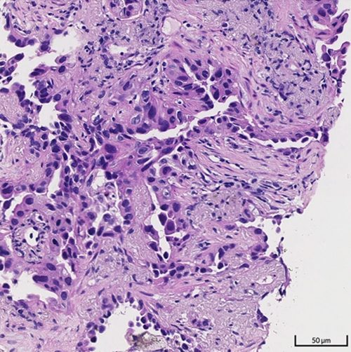
15Cáncer de pulmón
El cáncer que más muertes causa en el mundo. El tabaco provoca la mayoría, pero el cribado con TC de baja dosis, las terapias dirigidas y la inmunoterapia han cambiado su pronóstico.
Leer → 16
16Cáncer de pulmón microcítico
El tipo más agresivo de cáncer de pulmón, casi siempre en fumadores. Crece y se extiende deprisa, pero responde al principio a la quimioterapia; la inmunoterapia y el tarlatamab han abierto nuevas opciones.
Leer → 17
17Tumores carcinoides de pulmón
Tumores neuroendocrinos de crecimiento lento del pulmón, sin relación clara con el tabaco. La mayoría se curan con cirugía.
Leer → 18
18Mesotelioma
Cáncer de la pleura, y a veces del peritoneo, causado casi siempre por el amianto inhalado décadas antes. Es una enfermedad profesional reconocida.
Leer →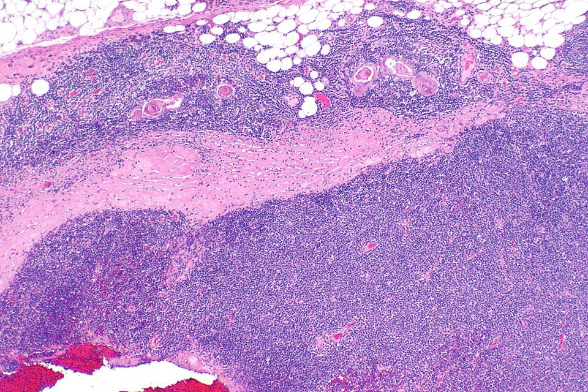
19Timoma y carcinoma tímico
Tumores raros del timo, una glándula situada detrás del esternón. Se asocian a enfermedades autoinmunes como la miastenia gravis.
Leer →Aparato digestivo
 20
20Cáncer de estómago y esófago
Dos cánceres del tubo digestivo alto que comparten síntomas y tratamientos. El Helicobacter pylori, el tabaco, el alcohol y el reflujo son sus grandes causas; la quimioterapia perioperatoria y la inmunoterapia han mejorado su pronóstico.
Leer → 21
21Cáncer colorrectal
El cáncer más frecuente en España si se suman hombres y mujeres. Casi siempre nace de un pólipo que se puede detectar y quitar a tiempo: el cribado con sangre oculta en heces salva vidas.
Leer → 22
22Cáncer de recto
El cáncer de los últimos 15 cm del intestino. Se trata distinto que el de colon: resonancia, radioterapia y cirugía pélvica especializada; cada vez más pacientes evitan la cirugía con la estrategia de "observar y esperar".
Leer → 23
23Cáncer de ano
Cáncer poco frecuente, causado casi siempre por el VPH. Se cura en la mayoría de los casos con quimiorradioterapia, sin necesidad de cirugía.
Leer → 24
24Cáncer de intestino delgado
Cáncer raro pese a que el intestino delgado es la parte más larga del tubo digestivo. Incluye adenocarcinomas, tumores neuroendocrinos, GIST y linfomas.
Leer → 25
25Tumor del estroma gastrointestinal (GIST)
Un sarcoma del tubo digestivo que cambió la oncología: fue el primer tumor sólido controlado con una pastilla dirigida, el imatinib.
Leer →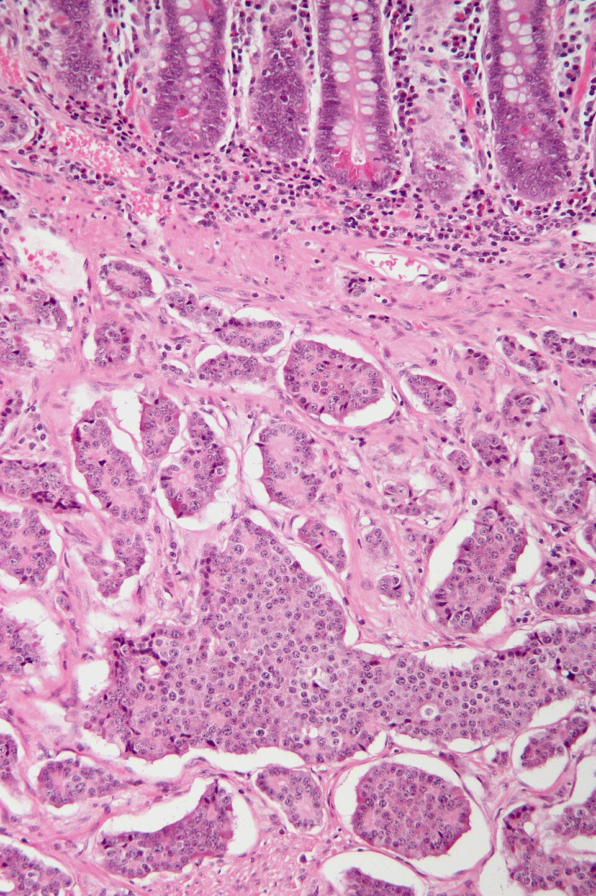
26Tumores neuroendocrinos digestivos
Tumores que nacen de células productoras de hormonas del intestino. Suelen crecer despacio y algunos causan el síndrome carcinoide; el lutecio-177 ha mejorado su tratamiento.
Leer → 27
27Cáncer de apéndice y pseudomixoma peritoneal
Tumores raros del apéndice, a menudo descubiertos tras una apendicitis. Algunos llenan el abdomen de moco (pseudomixoma) y se tratan con cirugía y quimioterapia intraperitoneal caliente.
Leer → 28
28Cáncer de páncreas
Uno de los cánceres más difíciles: da pocos síntomas hasta fases avanzadas y su supervivencia sigue siendo baja. Va camino de ser la segunda causa de muerte por cáncer en Europa; la cirugía con quimioterapia es la mejor opción de curación.
Leer →29Tumores neuroendocrinos de páncreas
Tumores de las células que fabrican hormonas en el páncreas. Son mucho menos agresivos que el cáncer de páncreas habitual; algunos producen hormonas que causan síntomas llamativos.
Leer → 30
30Cáncer de hígado (hepatocarcinoma)
El cáncer primario de hígado aparece casi siempre sobre un hígado dañado por hepatitis B o C, alcohol o grasa. La vigilancia con ecografía de las personas con cirrosis permite detectarlo a tiempo.
Leer → 31
31Colangiocarcinoma
Cáncer de los conductos biliares, dentro o fuera del hígado. Es poco frecuente y difícil de tratar, pero muchos tienen alteraciones genéticas con tratamientos dirigidos.
Leer → 32
32Cáncer de vesícula biliar
Cáncer poco frecuente en Europa pero muy común en Chile, Bolivia, India y otros países. A menudo se descubre por casualidad tras quitar la vesícula por cálculos.
Leer →Urológicos y suprarrenales
 33
33Cáncer de próstata
El cáncer más frecuente en hombres en España. Muchos crecen tan despacio que no necesitan tratamiento inmediato; otros son agresivos. El PSA, la resonancia y la vigilancia activa ayudan a distinguirlos.
Leer → 34
34Cáncer de vejiga y riñón
Los dos grandes cánceres urológicos después del de próstata. La sangre en la orina es su señal de alarma común y el tabaco su principal causa evitable; la inmunoterapia y los anticuerpos conjugados han transformado su tratamiento.
Leer →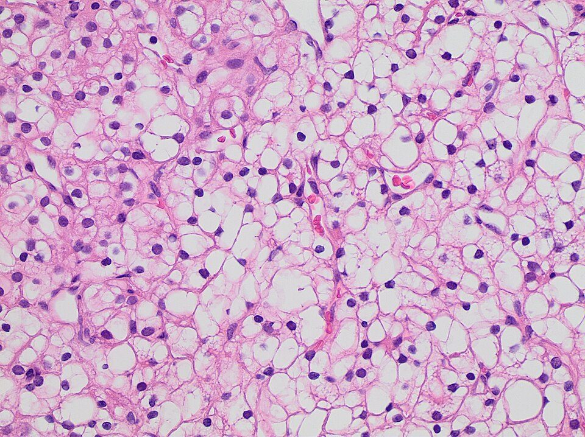
35Cáncer de riñón de células claras
El tipo más frecuente de cáncer de riñón. Su biología, ligada al gen VHL y a la falta de oxígeno, explica por qué responde a antiangiogénicos, inmunoterapia y belzutifán.
Leer → 36
36Cáncer del tracto urinario superior
Carcinomas uroteliales de la pelvis renal y el uréter. Son raros, se asocian al síndrome de Lynch y a ciertas hierbas medicinales, y a menudo se tratan quitando el riñón y el uréter.
Leer →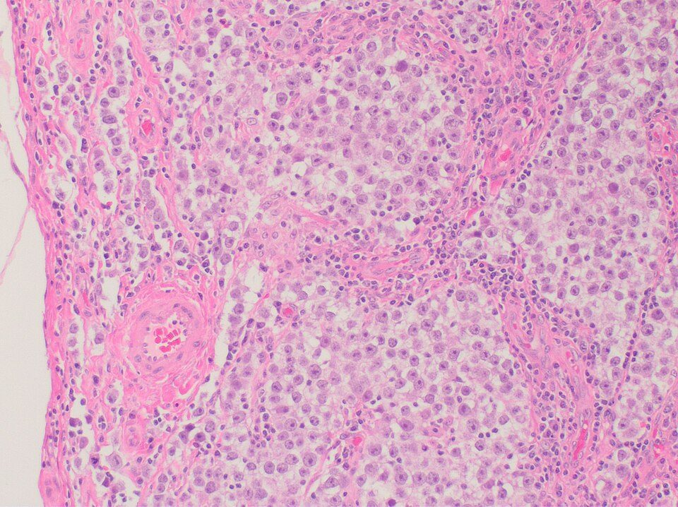
37Cáncer de testículo
El cáncer sólido más frecuente en hombres jóvenes y uno de los más curables, incluso con metástasis, gracias al cisplatino. La autoexploración ayuda a detectarlo pronto.
Leer → 38
38Cáncer de pene
Cáncer raro en Europa pero más frecuente en partes de Sudamérica, África y Asia. Se relaciona con el VPH, la fimosis y la falta de higiene; detectado pronto se puede tratar conservando el órgano.
Leer →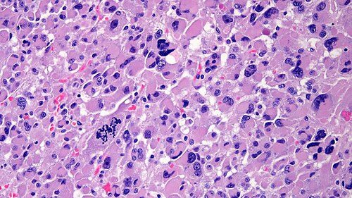
39Carcinoma suprarrenal
Cáncer muy raro de la corteza de las glándulas suprarrenales. A menudo produce hormonas en exceso; se trata con cirugía y mitotano.
Leer → 40
40Feocromocitoma y paraganglioma
Tumores que fabrican adrenalina y causan crisis de hipertensión, palpitaciones y sudor. Casi el 40 % son hereditarios, la mayor proporción de todos los tumores.
Leer →Piel
 41
41Melanoma
El cáncer de piel más grave, aunque se cura casi siempre si se detecta pronto. Revisar los lunares con la regla ABCDE, protegerse del sol y la inmunoterapia han cambiado su historia.
Leer → 42
42Carcinoma basocelular
El cáncer más frecuente del ser humano. Crece despacio, casi nunca da metástasis y se cura con cirugía en la gran mayoría de los casos.
Leer →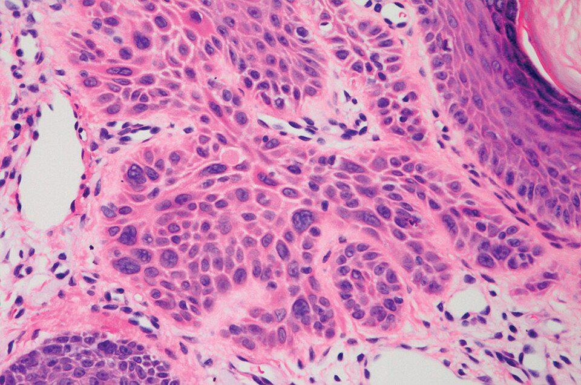
43Carcinoma epidermoide cutáneo
El segundo cáncer de piel más frecuente. Aparece en zonas expuestas al sol, a veces a partir de queratosis actínicas; se cura con cirugía y el cemiplimab ha cambiado los casos avanzados.
Leer → 44
44Carcinoma de células de Merkel
Un cáncer de piel raro y agresivo, causado por un poliomavirus o por el sol. Fue uno de los primeros tumores en mostrar respuestas espectaculares a la inmunoterapia.
Leer → 45
45Sarcoma de Kaposi
Tumor de los vasos causado por el herpesvirus humano 8. Fue una de las primeras señales de la epidemia de sida y hoy se controla en la mayoría de los casos con el tratamiento antirretroviral.
Leer → 46
46Linfomas cutáneos
Linfomas que nacen en la piel. El más frecuente, la micosis fungoide, evoluciona durante años como manchas parecidas a un eccema.
Leer →Cabeza, cuello y tiroides
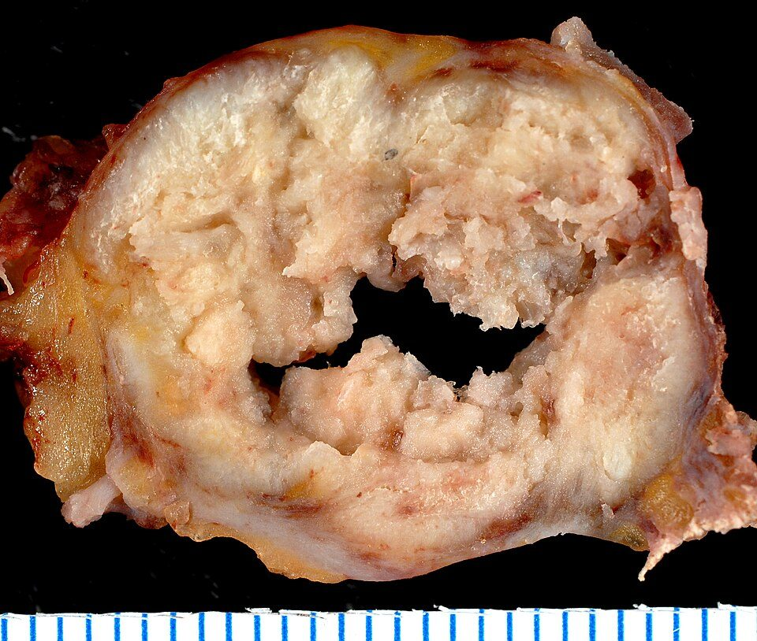
47Cáncer de cabeza y cuello
Un grupo de cánceres de boca, garganta, laringe, nariz y glándulas salivales. Tabaco, alcohol y el VPH son sus grandes causas; el tratamiento busca curar conservando la voz, la deglución y el aspecto.
Leer → 48
48Cáncer de boca
Cáncer de labios, lengua, encías, suelo de la boca y paladar. Una llaga que no cura en tres semanas debe revisarse; el dentista puede detectarlo pronto.
Leer → 49
49Cáncer de laringe
Cáncer de las cuerdas vocales y la laringe, ligado casi siempre al tabaco. La ronquera persistente permite detectarlo pronto, cuando se cura en más del 90 % conservando la voz.
Leer → 50
50Cáncer de orofaringe
Cáncer de amígdalas y base de la lengua. Ha aumentado mucho por el VPH, que afecta a personas más jóvenes y no fumadoras y tiene mejor pronóstico.
Leer →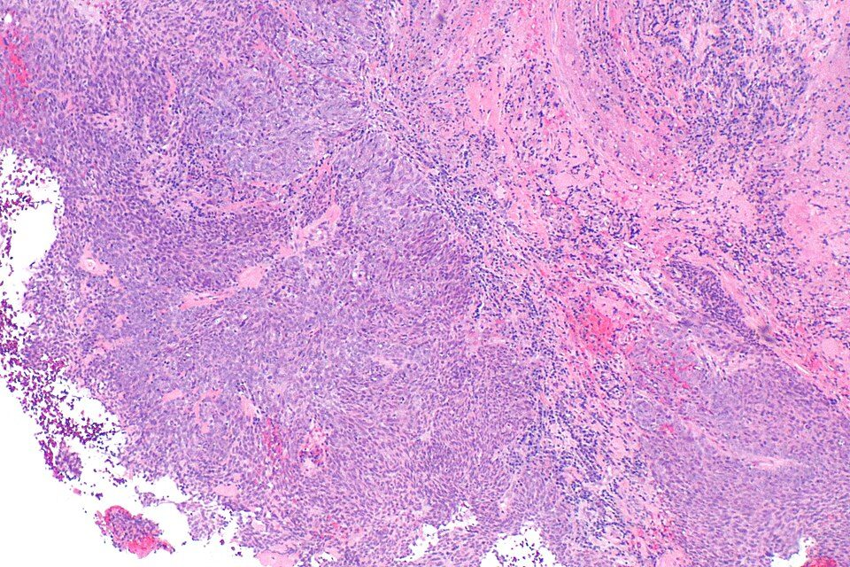
51Cáncer de nasofaringe
Cáncer de la parte alta de la garganta, detrás de la nariz. Muy frecuente en el sur de China y el sudeste asiático, ligado al virus de Epstein-Barr; responde muy bien a la radioterapia.
Leer →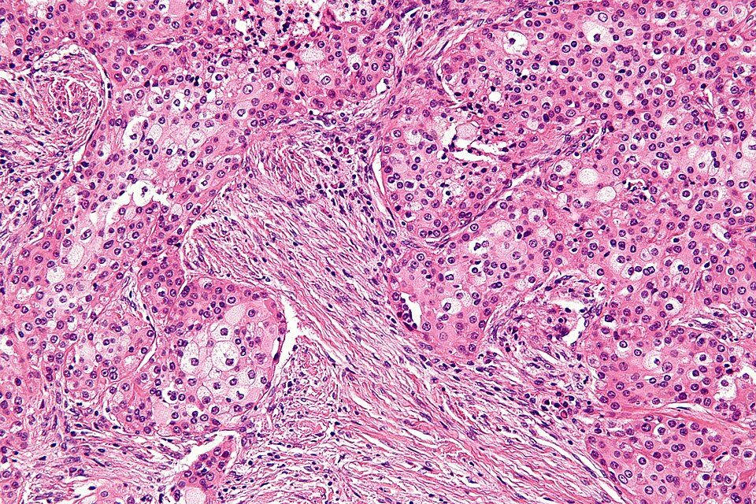
52Cáncer de glándulas salivales
Tumores raros y muy variados de la parótida y otras glándulas salivales. La mayoría de los bultos de la parótida son benignos, pero todos deben estudiarse.
Leer → 53
53Cáncer de fosas nasales y senos paranasales
Tumores raros de la nariz y los senos, relacionados con el polvo de madera, el cuero y otras exposiciones laborales. Sus síntomas se confunden con una sinusitis.
Leer →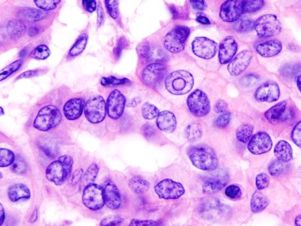
54Cáncer de tiroides
El cáncer endocrino más frecuente. La mayoría son carcinomas papilares con un pronóstico excelente; el reto actual es evitar el sobrediagnóstico de tumores diminutos.
Leer → 55
55Carcinoma medular de tiroides
Cáncer de las células C del tiroides, hereditario en una cuarta parte de los casos por mutaciones del gen RET. Detectar a los portadores permite quitar el tiroides antes de que aparezca.
Leer → 56
56Carcinoma anaplásico de tiroides
Uno de los cánceres más agresivos que existen, aunque muy raro. La terapia dirigida contra BRAF ha permitido por primera vez operar y controlar a algunos pacientes.
Leer →Ojo y sistema nervioso
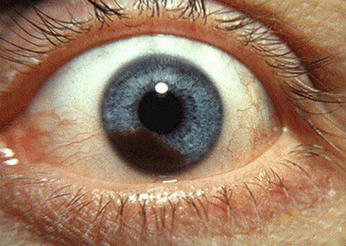
57Melanoma uveal
El cáncer primario del ojo más frecuente en adultos. Muy distinto del melanoma de piel: no lo causa el sol, se trata a menudo conservando el ojo y tiende a dar metástasis en el hígado.
Leer → 58
58Retinoblastoma
Cáncer del ojo de los niños pequeños. Una pupila blanca en las fotos con flash es la señal típica; se cura en más del 95 % en los países con recursos.
Leer → 59
59Tumores cerebrales
Un grupo muy variado de tumores del cerebro y la médula espinal, desde meningiomas benignos hasta glioblastomas. La clasificación molecular de la OMS de 2021 ha cambiado su diagnóstico.
Leer → 60
60Glioblastoma
El tumor cerebral maligno más frecuente y agresivo en adultos. El tratamiento estándar combina cirugía, radioterapia y temozolomida; la investigación busca nuevas vías.
Leer →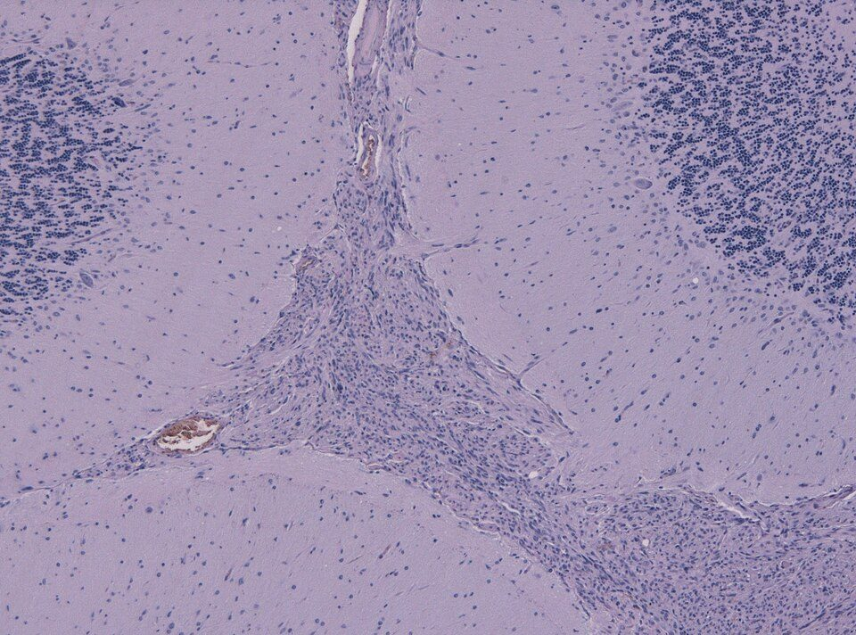
61Gliomas de bajo grado (astrocitoma y oligodendroglioma IDH mutados)
Gliomas de crecimiento lento en adultos jóvenes, definidos por la mutación de IDH. El vorasidenib es la primera terapia dirigida que retrasa su progresión.
Leer → 62
62Meningioma
El tumor cerebral primario más frecuente. Nace de las meninges y casi siempre es benigno; muchos solo necesitan vigilancia.
Leer → 63
63Metástasis cerebrales
Los tumores cerebrales más frecuentes, procedentes de cánceres de pulmón, mama, melanoma o riñón. La radiocirugía y los fármacos que atraviesan la barrera del cerebro han mejorado mucho su control.
Leer → 64
64Linfoma primario del sistema nervioso central
Un linfoma B agresivo limitado al cerebro, los ojos o la médula. Se trata con quimioterapia con metotrexato a dosis altas, no con cirugía.
Leer →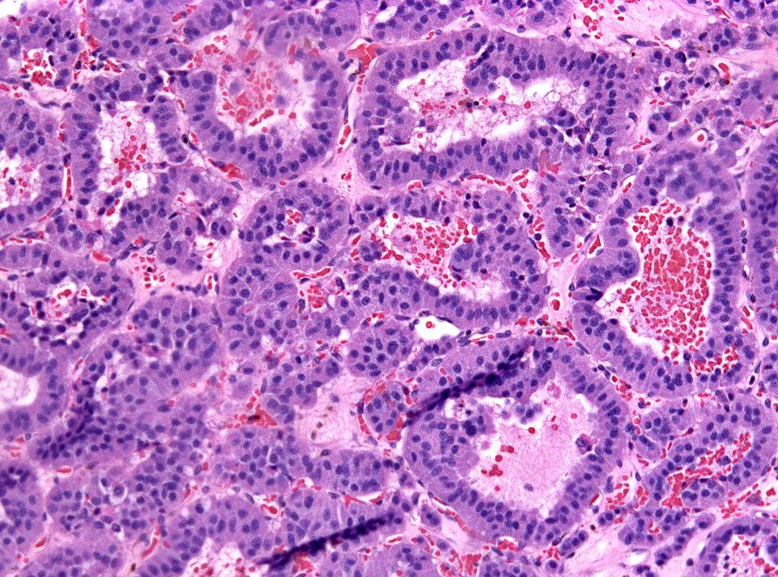
65Tumores de hipófisis
Tumores casi siempre benignos de la glándula que dirige las hormonas del cuerpo. Pueden causar acromegalia, Cushing, alteraciones de la regla o pérdida de visión.
Leer → 66
66Meduloblastoma
El tumor cerebral maligno más frecuente en niños. Nace en el cerebelo y se cura en tres de cada cuatro casos; su clasificación molecular guía la intensidad del tratamiento.
Leer → 67
67Ependimoma
Tumor que nace del revestimiento de los ventrículos cerebrales y del canal de la médula. En niños suele estar en la fosa posterior; en adultos, en la médula espinal.
Leer →Sangre: leucemias, linfomas y mieloma
 68
68Leucemias
Cánceres de las células de la sangre que se forman en la médula ósea. Hay formas agudas, que necesitan tratamiento urgente, y crónicas, que a veces solo requieren vigilancia. Las curaciones han crecido gracias a la quimioterapia, el trasplante, las terapias dirigidas y las CAR-T.
Leer → 69
69Leucemia linfoblástica aguda
El cáncer más frecuente en la infancia, con un 90 % de curaciones en niños. En adultos es más difícil, pero blinatumomab, inotuzumab y las CAR-T han mejorado mucho los resultados.
Leer → 70
70Leucemia mieloide aguda
La leucemia aguda más frecuente en adultos. Su perfil genético decide el tratamiento: quimioterapia intensiva, fármacos dirigidos contra FLT3, IDH o menina, venetoclax y trasplante.
Leer → 71
71Leucemia promielocítica aguda
Una leucemia que fue de las más mortales y hoy se cura en más del 90 % de los casos sin quimioterapia, con ácido transretinoico y trióxido de arsénico.
Leer → 72
72Leucemia linfocítica crónica
La leucemia más frecuente en adultos de países occidentales. Muchas personas solo necesitan vigilancia durante años; cuando hace falta, las pastillas dirigidas han sustituido a la quimioterapia.
Leer →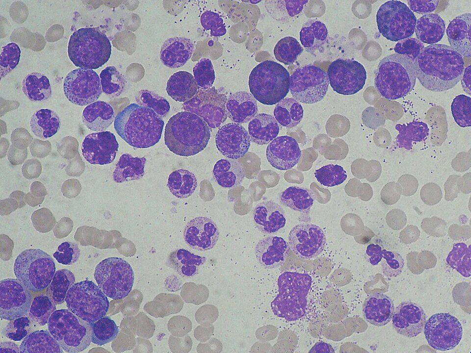
73Leucemia mieloide crónica
La leucemia que inauguró la era de las terapias dirigidas. Con el imatinib y sus sucesores, la esperanza de vida es casi normal y algunas personas pueden dejar el tratamiento.
Leer →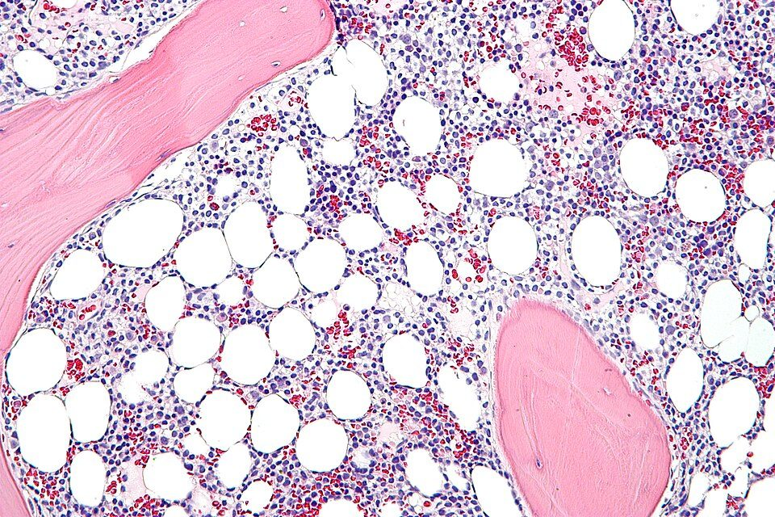
74Tricoleucemia
Una leucemia crónica rara con linfocitos "peludos". Casi siempre tiene la mutación BRAF V600E y responde muy bien al tratamiento.
Leer → 75
75Síndromes mielodisplásicos
Enfermedades de la médula ósea que fabrica células sanguíneas defectuosas, sobre todo en personas mayores. Causan anemia y pueden evolucionar a leucemia.
Leer → 76
76Neoplasias mieloproliferativas
Policitemia vera, trombocitemia esencial y mielofibrosis: enfermedades crónicas de la médula que producen demasiadas células, ligadas a la mutación JAK2. Su gran riesgo son las trombosis.
Leer →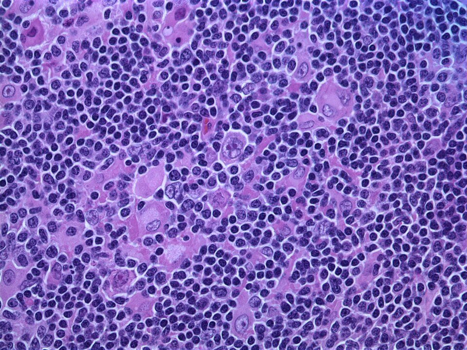
77Linfomas
Cánceres del sistema linfático, con más de 80 tipos. Se dividen en linfoma de Hodgkin y no Hodgkin, indolentes o agresivos; muchos se curan y otros se controlan durante años.
Leer → 78
78Linfoma de Hodgkin
Un linfoma de jóvenes que se cura en más del 85-90 % de los casos. El tratamiento moderno, guiado por PET, busca curar con menos efectos a largo plazo.
Leer → 79
79Linfoma difuso de células B grandes
El linfoma más frecuente. Es agresivo pero se cura en dos de cada tres casos con inmunoquimioterapia; las CAR-T y los anticuerpos biespecíficos han cambiado las recaídas.
Leer → 80
80Linfoma folicular
El linfoma indolente más frecuente. Crece despacio durante años; muchas personas pasan largos periodos sin tratamiento y viven décadas.
Leer → 81
81Linfoma de células del manto
Un linfoma B poco frecuente, sobre todo en hombres mayores, con la translocación de la ciclina D1. Los inhibidores de BTK han mejorado mucho su tratamiento.
Leer → 82
82Linfomas de la zona marginal
Linfomas indolentes a menudo ligados a infecciones o inflamación crónica. El MALT gástrico puede curarse solo con antibióticos contra el Helicobacter pylori.
Leer → 83
83Linfoma de Burkitt
El tumor humano de crecimiento más rápido, que duplica su tamaño en un día. Aun así, se cura en más del 90 % de los niños y del 80 % de los adultos con quimioterapia intensiva.
Leer → 84
84Linfomas T periféricos
Un grupo de linfomas raros y variados de los linfocitos T maduros. Muchos son agresivos; el brentuximab ha mejorado los que expresan CD30.
Leer → 85
85Mieloma múltiple
Cáncer de las células plasmáticas de la médula ósea, que fabrican anticuerpos. Daña huesos y riñones; sigue sin curarse en la mayoría, pero la supervivencia se ha multiplicado con nuevas combinaciones, CAR-T y biespecíficos.
Leer →86Macroglobulinemia de Waldenström
Un linfoma indolente que fabrica una proteína IgM que espesa la sangre. Casi siempre lleva la mutación MYD88 y responde a los inhibidores de BTK.
Leer →Sarcomas y hueso
 87
87Sarcomas
Cánceres raros de los tejidos de sostén: músculo, grasa, hueso, cartílago, vasos y nervios. Hay más de 70 tipos y deben tratarse en centros de referencia; un bulto de más de 5 cm o que crece debe estudiarse.
Leer →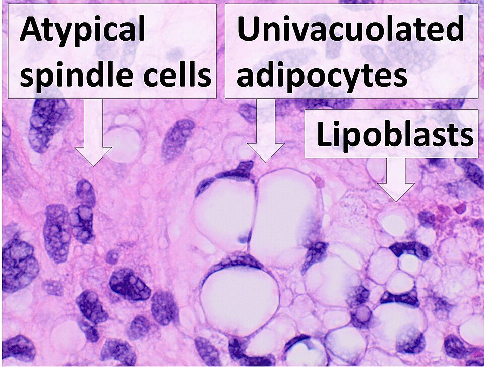
88Liposarcoma
El sarcoma de partes blandas más frecuente en adultos, nacido de células grasas. Sus subtipos van de muy lentos a agresivos.
Leer →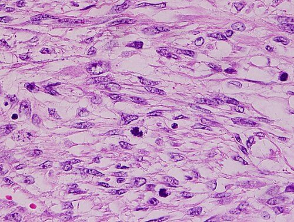
89Leiomiosarcoma
Sarcoma del músculo liso, presente en útero, vasos sanguíneos, retroperitoneo y extremidades. Tiende a dar metástasis en pulmón e hígado.
Leer → 90
90Osteosarcoma
El cáncer de hueso más frecuente en adolescentes. Aparece cerca de la rodilla o el hombro durante el estirón; con quimioterapia y cirugía se cura en dos de cada tres casos localizados.
Leer → 91
91Sarcoma de Ewing
Un tumor de hueso y partes blandas de niños y jóvenes, definido por la fusión EWSR1-FLI1. Requiere quimioterapia intensiva, cirugía y radioterapia.
Leer → 92
92Condrosarcoma
Cáncer de cartílago, el tumor óseo maligno más frecuente en adultos. No responde a la quimioterapia ni apenas a la radioterapia: la cirugía es la clave.
Leer → 93
93Rabdomiosarcoma
El sarcoma de partes blandas más frecuente en niños, nacido de células parecidas al músculo esquelético. Se trata con quimioterapia, cirugía y radioterapia.
Leer → 94
94Angiosarcoma
Un sarcoma raro y agresivo de los vasos sanguíneos o linfáticos. Aparece en el cuero cabelludo de personas mayores o tras la radioterapia de mama.
Leer →Infancia y otros
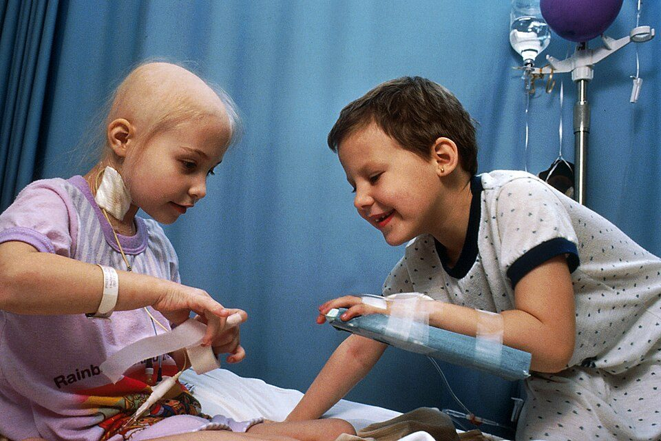
95Cáncer infantil
El cáncer en niños y adolescentes es raro y muy distinto del de adultos. Hoy se curan más de 8 de cada 10 en Europa, gracias a los ensayos colaborativos y a las unidades especializadas.
Leer →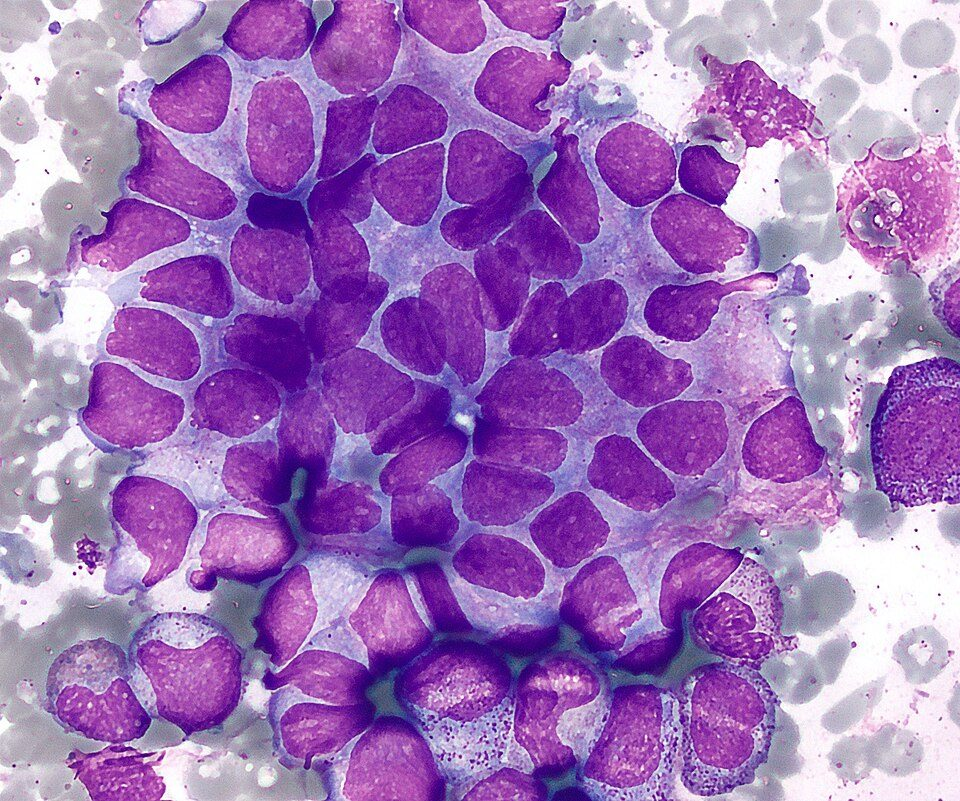
96Neuroblastoma
El tumor sólido fuera del cerebro más frecuente en niños pequeños. Algunos desaparecen solos y otros son muy agresivos; la inmunoterapia anti-GD2 ha mejorado el pronóstico de los de alto riesgo.
Leer →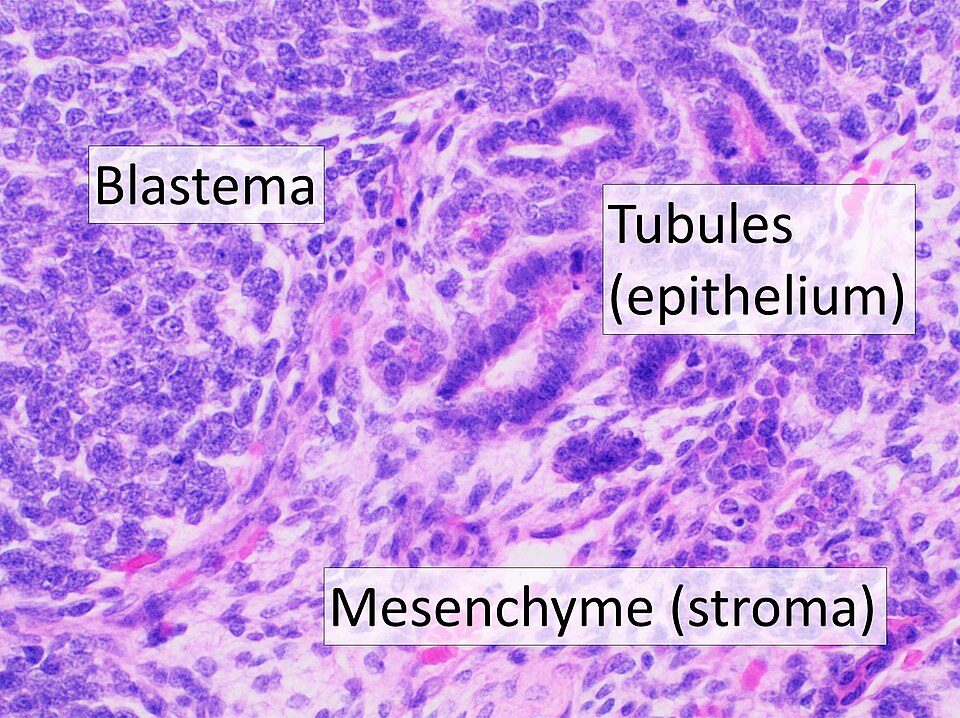
97Tumor de Wilms (nefroblastoma)
El cáncer de riñón de los niños pequeños. Suele descubrirse como un bulto en el abdomen y se cura en más del 90 % de los casos.
Leer → 98
98Hepatoblastoma
El cáncer de hígado más frecuente en niños pequeños. La quimioterapia con cisplatino y la cirugía, o el trasplante hepático, curan a la mayoría.
Leer →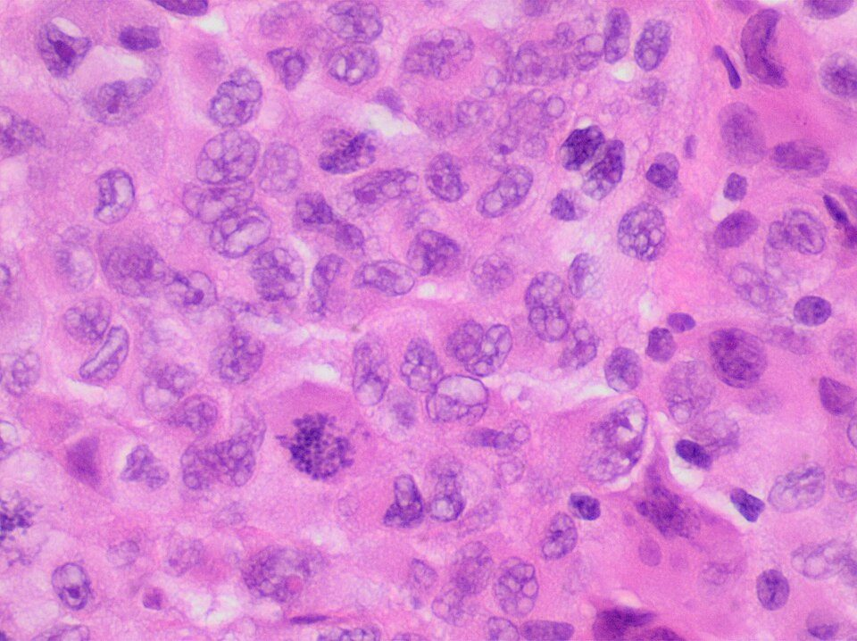
99Cáncer de origen desconocido
Metástasis en las que no se encuentra el tumor de origen pese a un estudio completo. Las pruebas moleculares ayudan a identificar el origen o una diana tratable.
Leer → 100
100Metástasis óseas
El hueso es uno de los lugares a los que más se extienden los cánceres de mama, próstata, pulmón, riñón y tiroides, y el mieloma. Hay tratamientos eficaces para el dolor y para prevenir fracturas.
Leer →